Parallel Programming and Multiprocessors
Synchronization
The need for synchronization arises wheneven there are concurrent processes in a system. There are two kinds of scenorios:
-
Producer-Consumer: a consumer process must wait until the producer process has produced data.
-
Mutual Exclusion: ensure that only one process uses a resouce at a given time.
Sequential Consistency
A system is sequentially consistent if the result of any execution is the same as if the operations of all the processors were executed in some sequential order and the operation of each individual proceessor appera in the order specified by the program.
For instance: A: 1, 2, 3, 4 B: 5, 6, 7, 8
Then, {1, 5, 2, 3, 4, 6, 7, 8} is valid, while {1, 2, 6, 3, 4, 5, 7, 8} is invalid.
Sequential consistency = arbitrary order preserving interleaving of memory references of sequential programs.
Locks and Semaphores
Semaphores(mutual exclusion) can be implemented using ordinary Load and Store instructions in the Sequential Consistency memory model. However, protocols for mutual exclusion are difficult to design...
Atomic Operations
Sequential Consistency and Memory Fences
Implementation of sequential consistency is complicated by two issues:
- Out-of-order execution capability:
- Cache: cache can prevent the effect of a store from being seen by other processors.
Dekker's Algorithm
Mutual Exclusion Using Load/Store
A protocol based on two shared variables c1 and c2 How to implement mutual exclusion without Load/Store?
A Protocol for Mutual Exclusion
A protocol on 3 shared variable c1, c2 and turn. Intially, both c1 and c2 are 0. Turn variable is shared between process 1 and process 2. 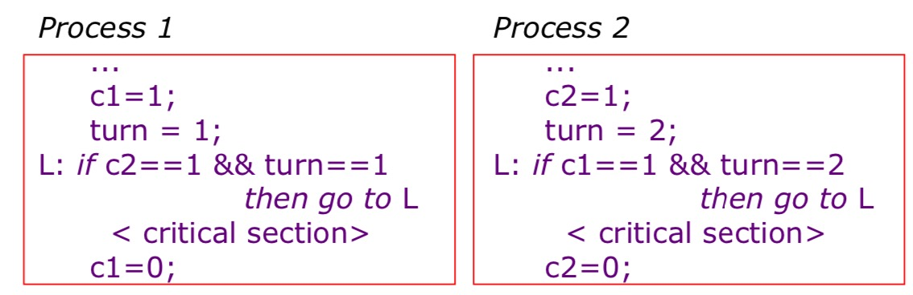
- turn == i ensures that only process i can wait.
- Variable c1 and c2 ensure mutual exclusion solutioin for n process was given by Dijkstra and it quite tricky.
Given a bakery issue: the bakery had several cashiers, but if more than one person approached a single cashier at the same time, that cashier would try to talk to all of them at once and become confused:
Lamport's Bakery Algorithm: people choose numbers when they enter the bakery, and then get served according to their number ordering. To choose a number, a customer asks for the number of everyone around her and choose a number higher than all the others.
Dijkstra's algorithm, while correct, depends on shared memory accesses being atomic, which means one processor reading when another is writing will be made to wait, rather that returning a possibly garbled value. In a sense, it constructs a high-level solution out of low-level mutual exclusion already implemented by the hardware.
Lamport's remarkably elegant and intuitive "Lamport's Bakery Algorithm" doesn't do that. His solution arranges contending processes in an implicit queue according to their arrival order, much like a wait-queue in a Bakery. Yet it doesn't matter if a processor reading data that is being updated by another processor gets grabage.
The Difference between Deadlock and LiveLock
- A deadlock is a state in which each member of a group of actions is waiting for some other member to release a lock.
- A livelock is similar to a deadlock, except that the states of the processes involved in the livelock constantly change with regard to one another, no progressing. Livelock is a special case of resource starvation. A thread often acts in response to the action of another thread. Assuming that the other thread's action is also a response to the action of another thread, the livelock may result. Give an instance, two people meets in a narrow corridor, and each tries to be polite by moving side to side without making any progress since they both repeatly move the same way at the same time.
Though neither deadlock nor livelock make any progress, they are different. For livelock, the threads are not blocked, they are simply too busy responding to each other to resume work. They're blocking each other.
Multiprocessors
Bus Implementation
Cache Coherence
Each CPU have their own separate cache. Suppose that CPU-1 updates A to 200. There two kinds of cache write strategy:
- Write-back: both memory and cache-2 have stale(outdated) values.
- Write-through: cache-2 has a stale calue. Give a simple figure to better illustrate this: 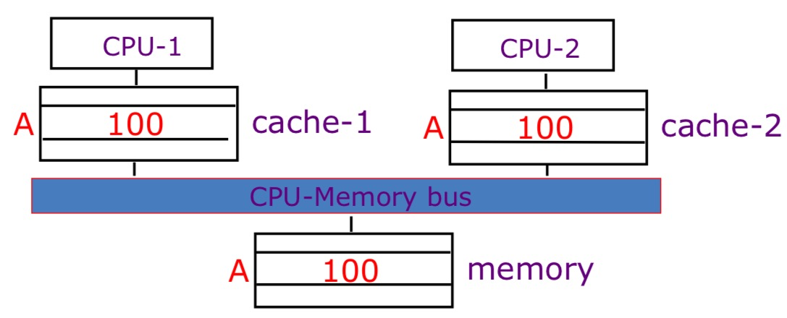
Cache Coherence VS. Memory Consistency
- A cache coherence protocol ensures that all writes by one processor are eventually visible to other processors, for one memory address: all processors see the same view of memory at the same time.
- A memory consistency model gives the rules on when a write by one processor can be observed by a read on another, across different addresses.
- A cache coherence protocol is not enough to ensure sequential consistency, but if sequentially consistent, then caches must be coherent.
- Combination of cache coherence protocol plus processor memory reorder buffer implements a given machine's memory consistency model.
Cache Coherence Protocols
Snoopy Cache
The idea is that have cache watch(snoop upon) DMA transfers, and then do the right thing.
Snoopy cache tags are dual-ported:

Shared Memory Multiprocessor
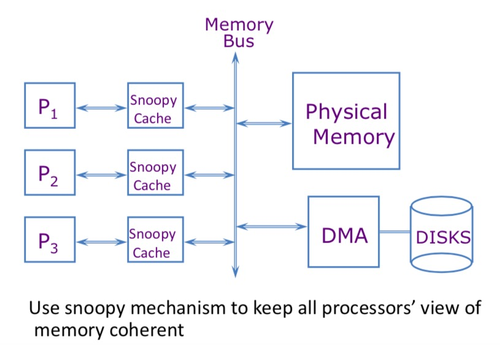
There are two types of strategies:
- Write Update(Broadcast): writes are broadcast and update all other cache copies
- Write Invalidate: writes invalidate all other cache copies.
Write Update (Broadcast) Protocols
- Write miss: broadcast on bus, other processors update copies.
- Read miss: memory is always up to date.
Write Invalidate Protocols
- Write miss: the address is invalidated in all other caches before the write is performed.
- Read miss: if a dirty is found in some cache, a write-back is performed before the memory is read. This means if processor A want to read address M, however, Processor B has update the value in its own cache but not on main memory. In this case, Processor A has to wait Processor B to write back its updated value from cache to main memory.
Basic MSI for Invalidate Protocol
- M: modified, the data in the cache is has been modified compared with that in memory.
- S: shared, you have read-only copy of data and the other processors whose caches have also read-only copies.
- I: invalid, the data in the cache is invalid.
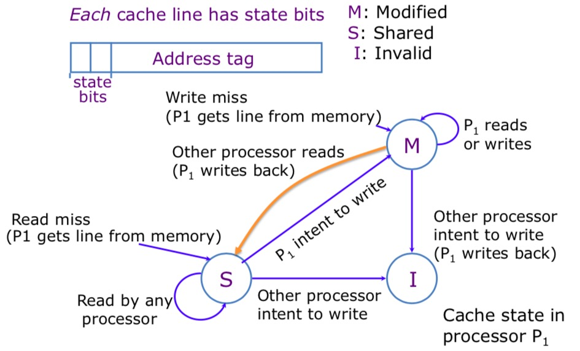 If a line is in the M state then no other cache can have a copy of the line.
MSEI: An Enhanced MSI Protocol
It adds an exclusive state. It separated the modified state into modified state(modified exclusive) and exclusive state(exclusive but unmodified)
Multiprocessor Interconnect
Introduction to Interconnection Networks
Network Performance
- Bandwidth: the rate of daa that can be transmitted over the network(network link) in a given time.
- Latency: the time taken for a message to be sender to receiver.
Actually, bandwidth can affect latency since increase in bandwidth can reduce congestion and messages take fewer flits and phlits. Besides, latency can affect bandwidth, round trip communication can be limmited by latency. Round trip flow-control can be limited by latency.
Anatomy of Message Latency
$$T = T_{head} + L/b$$,
where $T_{head}$ is head phit latency, includes $t_C$ and $t_R$, hop count, and contention.
Routing and Flow Control
There are two types of routing strategies:
- Oblivious: routing path is independent of state of network.
- Adaptive: routing path depends on state of network.
Flow Control
- Local(link or hop-based) flow control.
- End-to-end flow control(long distance)
Directory Protocol
Directory Coherence Motivation
-
Snoopy protocols requires every cache to broadcast, which faces lots of challenges:
- Requires large bus bandwidht, O(N)
- Requires large cache snooping bandwidth, O(N^2)
-
Directory protocols enable further scaling:
- Directory can track all caches holding a memory blocks and use point to point message to maintain coherence.
- Communication done via scalable point to point interconnet. 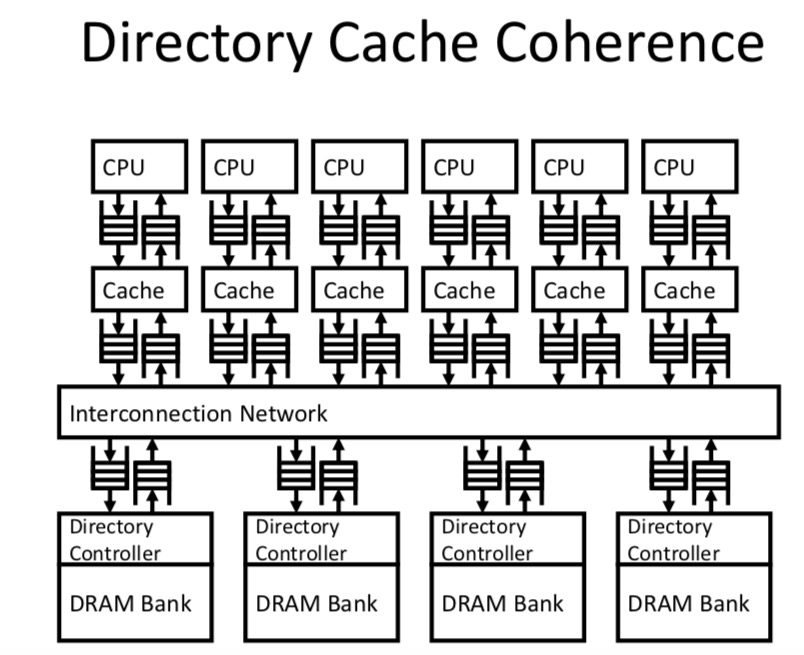
Implementation of Directory
Performance of Symmetric Shared-Memory Multiprocessors
Cache performance is combination of:
- Uniprocessor cache miss traffic
- Traffic caused by communication.
Coherency Misses
-
True sharing misses: this type of miss arises from the communication of data through the cache coherence mechanism
- Invalidates due to 1st write to shared block.
- Reads by another CPU of modified block in different cache.
- Miss would occur if block size were 1 word.
-
False sharing misses: when a block is invalidated because some word in the blcok, other than the one being read, is writen ito.
- invalidation does not cause a new value to be communicated, but only causes an extra cache miss.
- Block is shared, but no word in block is actually shared miss would occur if block size were 1 word.
Deadlock
Deadlock can occur if cycle possible in "Waits-for" graph.
- Dead avoidance: protocol designed to never deadlock, which is quite expensive.
- Deadlock recovery: allow deadlock to occur and then resolve deadlock usually through use of more buffering.
False Sharing
Definition of True Sharing Miss and False Sharing Misses
The misses that arise from interprocessor communication, which are often called coherence misses, can be broken into two separate sources:
- True sharing misses: it arises from the communication of data through the cache coherence mechanism.
- False sharing misses: it arises from the use of invalidation-based coherence algorithm with a single valid bit per cache block. False sharing occurs when a block is invalidated because some word in the block, other than the one being read, is writen to.
Some experiments given by H&P-5.
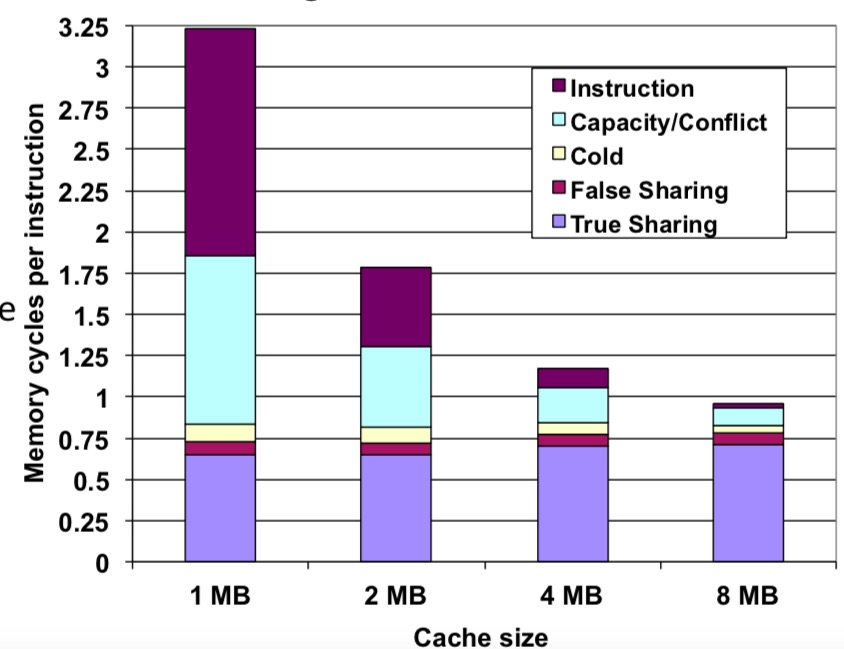 We can conclude that:
- The misses caused by true sharing and false sharing are almost unchanged with the cache size increasing from 1MB to 8MB.
- The misses caused by (Capacity, Conflict, Compulsory) decrease.
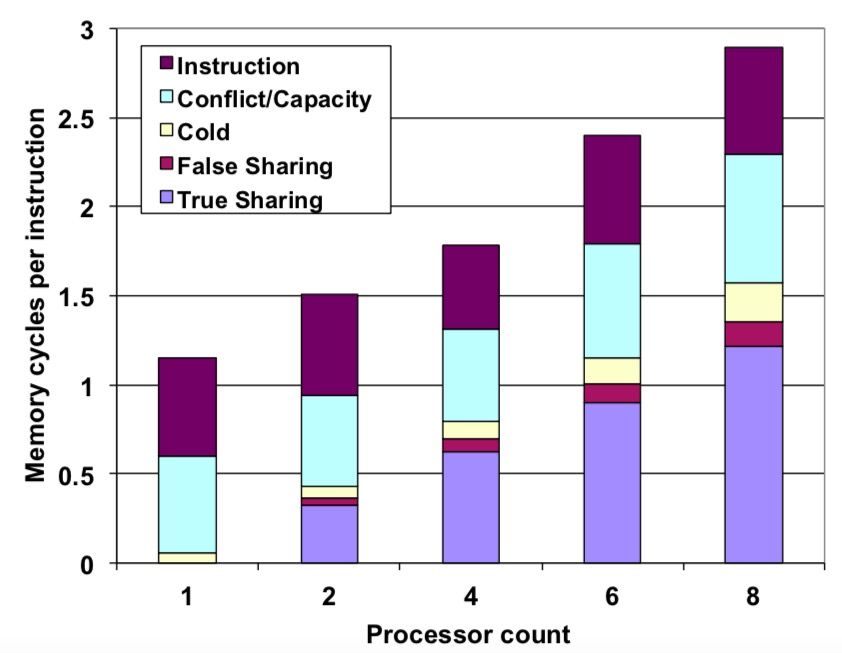 We can observe that:
- With the increase of number of processors, true sharing and false sharing misses both increase.
Directory Coherence Protocols
Snooping Coherence VS Directory Coherence(From slides of Edinburgh: http://www.inf.ed.ac.uk/teaching/courses/pa/Notes/lecture06-directory.pdf)
Snooping Coherence:
- Global state of a memory line is the collection of its state in all caches, and there is no summary state anywhere.
- All cache controllers monitor all other caches' activities and maintain the state of their lines.
- Requires a Broadcast shared medium (e.g., bus or ring) that also maintains a total order of all transactions.
- Bus acts as a serialization point to provide ordering.
Directory Coherence:
- Global state of a memory line is the collection of its state in all caches, but there is a summary state at the directory.
- Cache controllers interact only with directory rather than observe all activatiy.
- Can be implemented on scalable networks, where there is no total order and no simple broadcast, but only one-to-one communication.
- Directory acts as a serialization point to provide ordering.
How to Construct A Directory? Directory Structure
Directory Information
- Line state bits
- Shared: one or more nodes have the block cached, and the value in memory is up to date as well as in all the caches.
- Uncached: no node has a copy of the cache block.
- Modified: exactly one node has a ppoy of the cache block, and it has writen the blcok, so the memory copy is out of date. The processor is called the owner of the block.
- Sharing bit-vector: one bit for each processor that is sharing or for the single processor that has the modified block.
Directory of each block is organizaed as a table indexed by the memory line address. 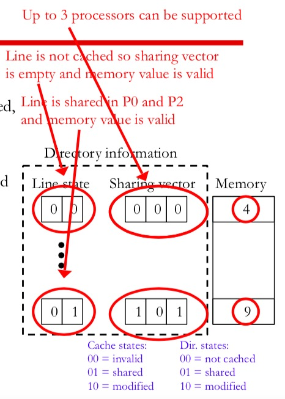
Directory Controller
Directory hardware is hardware logic that interacts with cache controllers and enforces cache coherence.
Scalability of Directory Information
Scalability Problem: number of bits in sharing vector limits the maximum bumber of processors in the system since
- larger nu machines are not possible once we decide on the size of the vector and smal
Directory Cache Coherence
SIMD
Hetergeneous Parallelism
Assumptions: Parallelizable work distributes perfectly onto $n$ processors of equal capability. However, there are some processors with asymmetric set of processing cores: Firstly, give a figure to illustrate what asymmetric set of processing cores means: 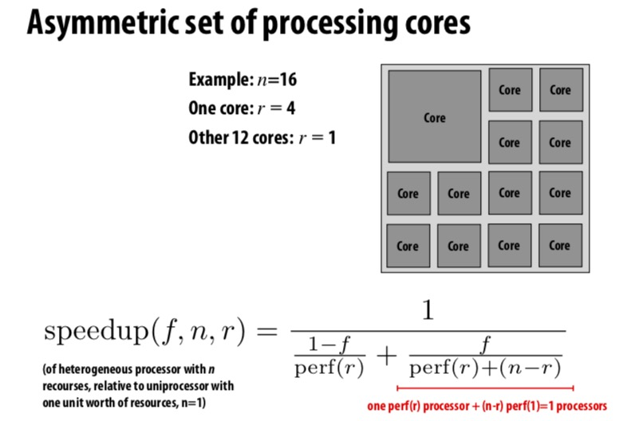 See the speedup brought by hetergeneous architecture: 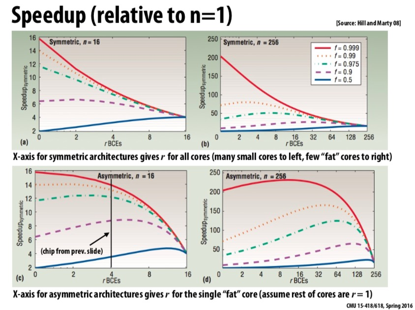
The Motivation of Hetergeneous Computing
Most real world application have complex wordload characteristics:
- They have components that can be widely parallelized and those that are difficult to parallelize.
- They have components that are amenable to wide SIMD execution and components that are divergent control flow.
- They have components with predictable data access and those with unpredictable access.
All of these characteristics can lead to an important idea about hetergeneous computing: The most efficient processor is a hetergeneous mixture of resource, which uses the most efficient tool for the job.
Implementing Synchronization
Overview
- Primitives for ensuring mutual exclusion:
- Locks
- Atomic primitives
- Transactions
- Primitives for event signaling:
- Barriers
- Flags
Three Phases of A Synchronization Event
- Acquire Method:
- Waiting Algorithm:
- Release Method:
Busy Waiting VS Blocking Synchronization
What's Blocking Synchronization
If progress cannot be made because a resource cannot be acquired, it is desirable to free up execution resources for another threads.
Barrier
Definition: coordination mechanism that forces process which participate in a concurrent algorithm to wait until each one of them has reached a certain point in its program. The collection of these coordination points is called the barrier. Once all the processes have reached the barrier, they are all permitted to continue past the barrier.
The following figure clearly illustrates this idea: 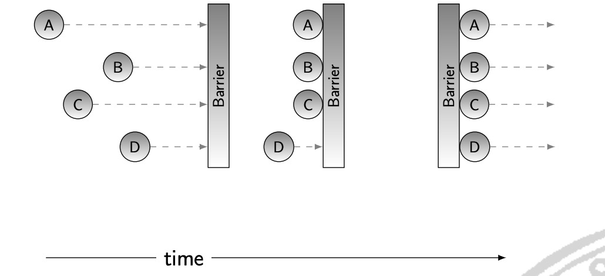
Memory Barrier
Why Memory Barrier
- For synchronization primitives:
- For lock-free data structure:
Lock
Lock-free Data Structure
Transaction Memory
Memory transaction is an atomic and isolated sequence of memory accesses inspired by database transaction.
- Atomicity: Upon transaction commit, all memory writes in transaction take effect at one. On transaction abort, none of the writes appear to take effect as if transaction never happened.
- Isolation: No other processor can observe writes before transaction cmmits.
- Serializability: Transactions appear to commit in a single serial order.
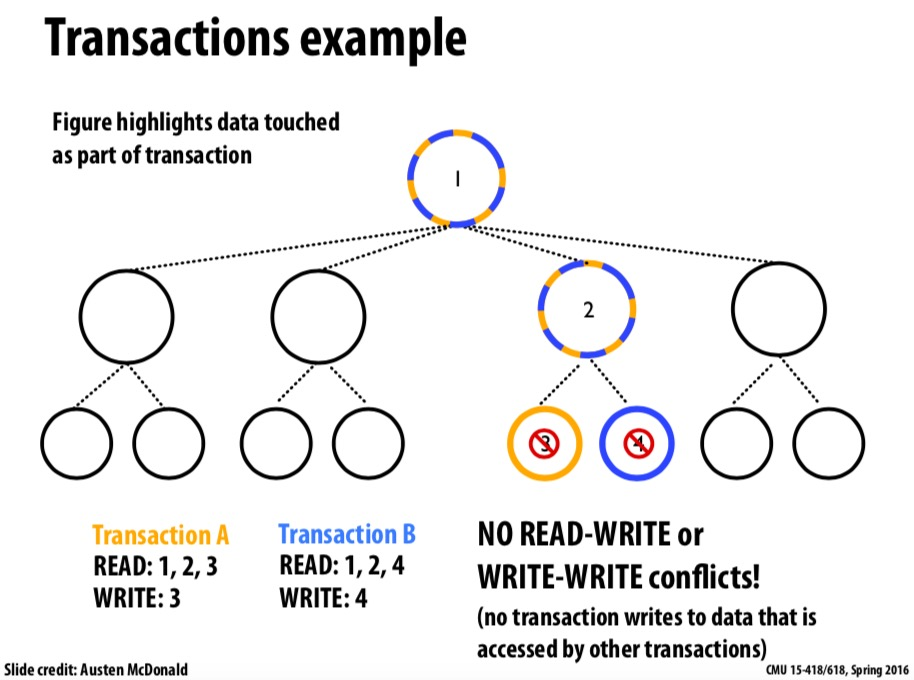 Transaction memory attempts to simplify parallel programming by grouping read and write operations and running them like a single operation. Transaction memory is like database transactions where all shard memory accesses and their effects are either commmitted all together or discarded as a group. All threads can enter the critical region simultaneously. If there are conflicts in accessing the shared memory data, threads try accessing the shared memory data again or are stopped without updating the shared memory data.
Dekker's Algorithm
Amdahl's Law
If F is the fraction of a calculation that is sequential then maximum speed-up that can be achieved by using P processers is $$ \frac{1}{F + \frac{1-F}{P}} $$
Different Level of Parallelism
- Instruction Level Parallelism
- Superscalar
- Out-of-order execution
- Speculative execution
- Thread Level Parallelism
- Hyperthreading technology
- Multicore
- Process Level Parallelism
- Multiprocessor system
- Hyperthreading technology
- Multicore
Different Types of Parallel Programming Models
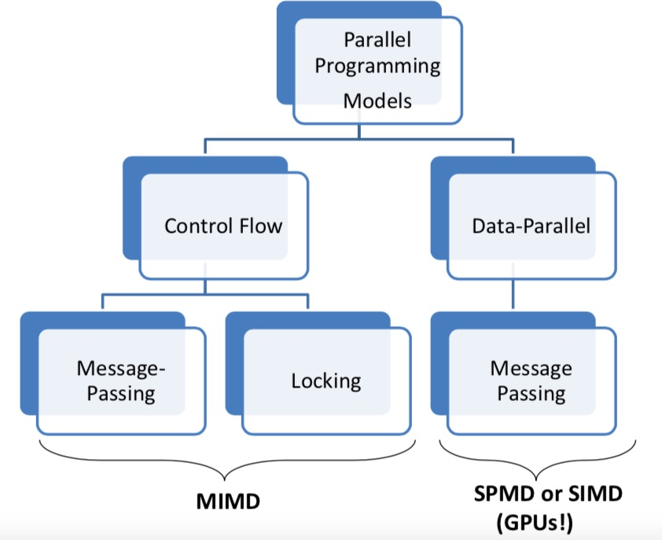
Different Level of Parallelism
Reference: MIT: 6.888
ILP: Instruction Level Parallelism
- Wide & superscalar pipelines
- Prediction, renaming & out-of-order execution
First start from CPI: $$CPI = CPI_{ideal} + CPI_{stall}$$
$CPI_{stall}$ $_$ contributors:
- Data dependencies: RAW, WAR, WAW
- Structural hazard
- Control hazard: branches, exceptions
- Memory latency: cache misses
5-stage Pipelined Processors:Adopted in MIPS R3000.
Advantages
- $CPI_{ideal}$ $_$ is 1.
- NO WAW or WAR hazard.
- Simple and elegant, it's still used in ARM & MIPS processors.
Disadvantages
- Upper performance bounds is CPI = 1.
- High latency instructions not handled well.
- 1 stage for accesses to large caches or multiplier
- Clock cycle is high.
- Unnessary stalls due to rigid pipeline.
Improving 5-stage Pipeline Performance
Several Optimization Directions
- High clock frequency: deeper pipeline.
- High $CPI_{ideal}$ : wider pipeline
- LOW $CPI_{stall}$: diversified pipelines, out-of-order execution.
- Balance conficting goals:
- Deeper & wider pipelines ==> more control hazards.
- Branch prediction.
Deeper Pipeline
Deeper pipeline can bring the advantages like higher clock frequency but at the cost of more forwarding and stall cases. It also has some crucial disadvantages:
- More overlapping, which means more dependencies and more stalls.
- Clock overhead becomes increaseing important. Let's say, if each pipeline stage introduces overhead O. If origiinal CCT is T, with N stages CCT is T/N + O. If N approaches infinite, speedup = T / (T/N = O) --> T/O.
- More power consumption.
Wider Pipeline
Wider pipeline, a.k.a superscalar pipeline, is based on the idea that we can operate on N instructions each clock cycle.
Wider pipeline can have Lower $CPI_{ideal}$, but at the cost of more ALU, register, file ports and so on. It also needs more forwarding & stall cases.
Parallel execution ==> more dependencies ==> more stalls. So, $CPI_{stall}$ increases due to increasing data and control hazards.
Diversified Pipeline
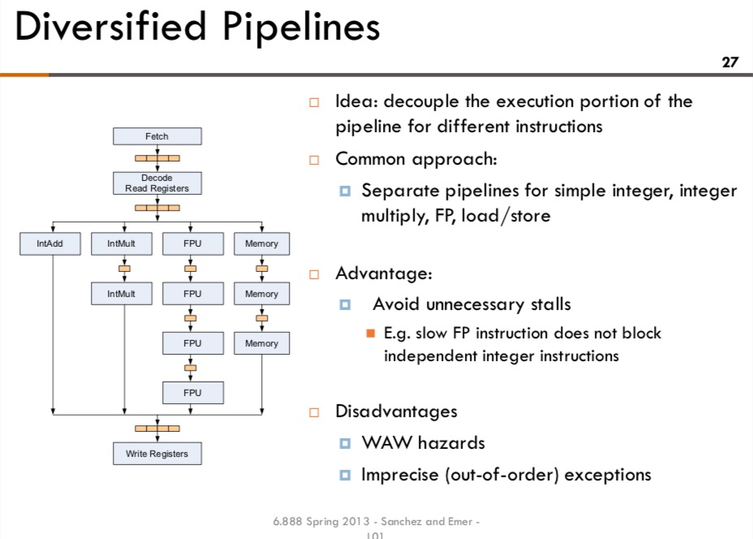
Modern Superscalar Out-of-Order Processor
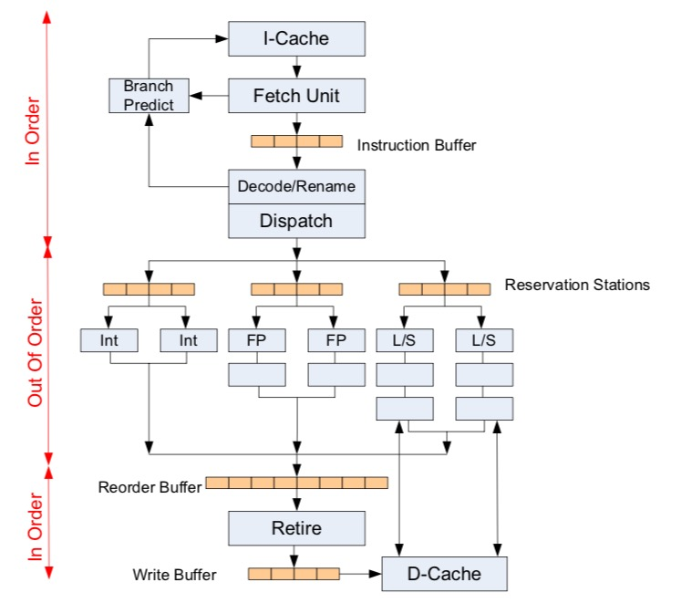
Out-of-Order Dispatch
For in-order execution, instructions are dispatched to a functional unit when:
- All older instructions have been dispatched.
- All operands are available and functional units are available.
For out-of-order execution, instructions are dispatched when
- All operands are available and functional units are available.
Memory Ordering for Load and Store
- When can a load read from the cache?
The Challenges of Superscalar Processors
- Clock frequency: gettign close to pipelining limits.
- Branch prediction & memory latency limit the practical benefits of OOO execution.
- Power grows superlinearly with high clock and more OOO logic.
- Design complexity grows exponentially with issue width.
- Upper bound of ILP. So, we must exploit TLP and DLP.
- Thread-Level Parallelism: multithreading and multicore.
- Data-level parallelism: SIMD instructions.
DLP: Data-Level Parallelism
SIMD Processing
Same instruction sequence applies to multiple data elements.